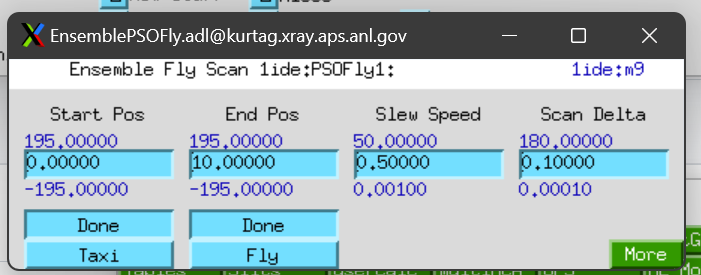
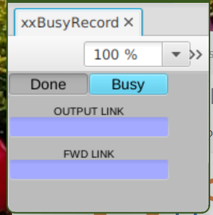
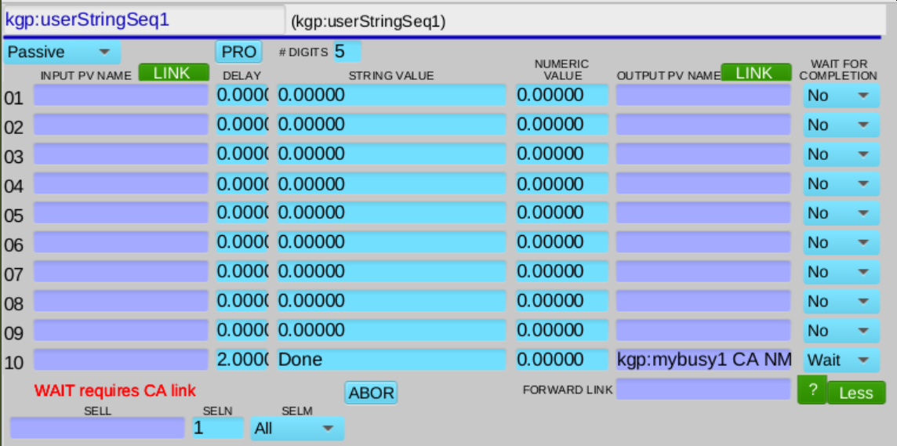
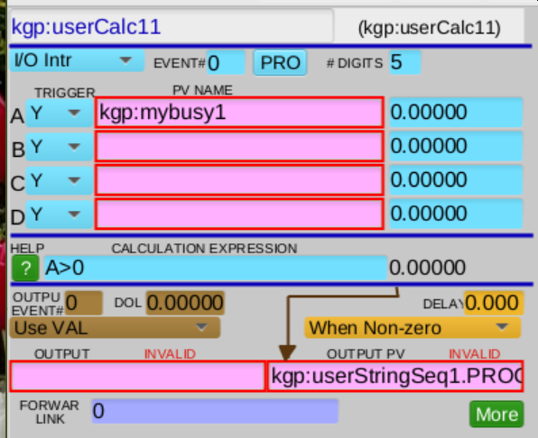
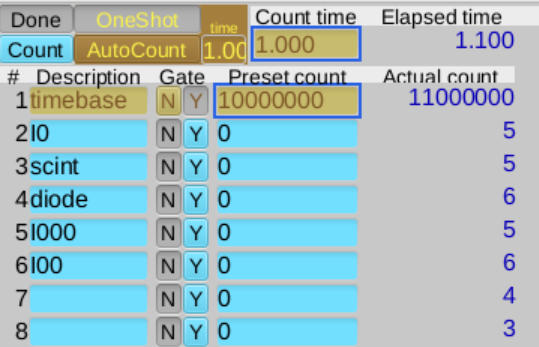
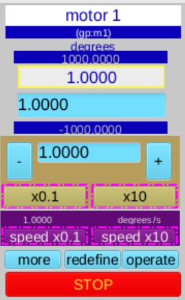
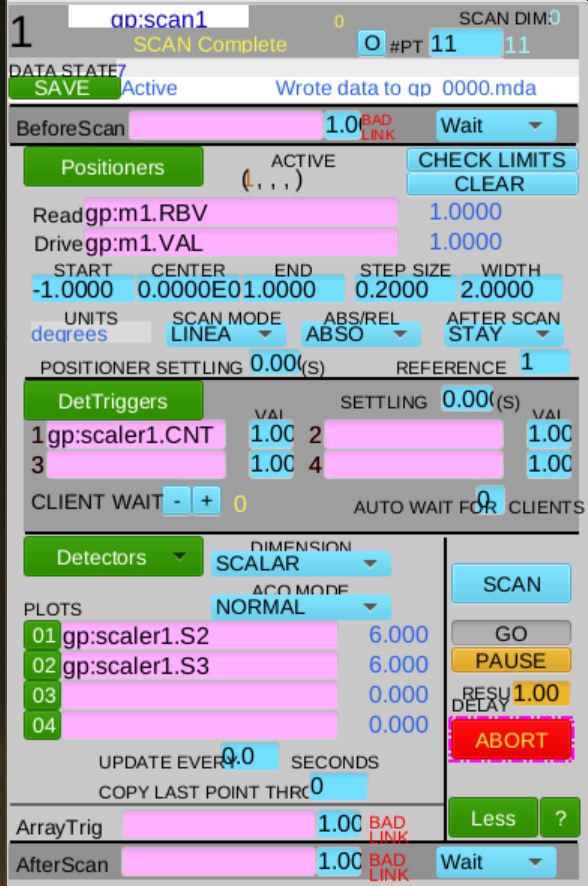

APS fly scans with taxi & fly busy records#
taxi and is responsible for preparing the hardware to fly. Once taxi is complete, the second busy record, called fly, performs the actual fly scan.The next figure shows a control screen (from an APS beam line). The screen has buttons to initiate taxi & fly sequences. Controls for some other scan parameters are also shown.

In a third (optional) phase, data is collected from hardware and written somewhere (in this example, to the databroker catalog).
simplified processing sequence for each phase
shows the basic flow of control
sequence: delay a short time, then return
no data collection
step scan of scaler v. motor
includes data collection
additional PVs recorded
plot saved data
typical use case for APS beamlines
Overview#
Compare the taxi & fly scan algorithm to an airplane flight:
phase |
airplane flight |
taxi & fly scan |
|---|---|---|
preparation |
ticketing, boarding, baggage handling |
configuration of software |
taxi |
move the aircraft to the start of the runway |
move the hardware to pre-scan positions |
fly |
start moving, liftoff at flight velocity |
start moving, begin collecting data at first position |
data |
baggage claim |
retrieve the fly scan data arrays |
Bluesky (Python) setup#
These packages are needed to begin. The first block contains Python standard packages, then come the various bluesky packages. Just the parts we plan on using here.
Create a logger instance in case we want to investigate internal details as our code runs.
Create an instance of the bluesky
RunEngine.Create a temporary databroker catalog to save collected data.
Subscribe the catalog to receive all data published by the RunEngine.
[1]:
import logging
import time
from apstools.synApps import BusyRecord
from apstools.plans import run_blocking_function
import bluesky
import bluesky.plan_stubs as bps
import databroker
from ophyd import Component, Device, Signal
logger = logging.getLogger()
logger.setLevel(logging.INFO)
RE = bluesky.RunEngine()
cat = databroker.temp().v2
RE.subscribe(cat.v1.insert)
print(f"{cat=}")
cat=<Intake catalog: temp>
EPICS IOC#
We’ll start with an EPICS IOC that provides two instances of the busy record.
In the gp: IOC, we can use these general purpose PVs for this example:
PV |
record |
purpose |
|---|---|---|
|
busy |
taxi (preparation) phase |
|
busy |
fly (fly scan) phase |
Here, an ophyd Device subclass coordinates both busy records.
The BusyRecord class from apstools.devices provides a standard interface to the synApps busy record. We subclass BusyRecord here as MyBusyRecord and redefine the .trigger() method, as advised by this bluesky tutorial. A DeviceStatus object is returned to monitor the progress of
the busy record.
Handling of the taxi and fly phases is identical. A complete taxi/fly scan is performed by the taxi_fly_plan() method. Note this method is a bluesky plan. It should be run by the bluesky RunEngine.
Also note that, as written, the taxi_fly_plan() method does not collect any data. As such, it should be considered as a part of a bluesky plan which opens a run and (triggers and)
reads data from one or more Signals or Devices.
[2]:
from ophyd import DeviceStatus
class MyBusyRecord(BusyRecord):
timeout = Component(Signal, value=10, kind="config")
def trigger(self):
"""
Start this busy record and return status to monitor completion.
This method is called from 'bps.trigger(busy, wait=True)'.
"""
status = DeviceStatus(self, timeout=self.timeout.get())
executing_values = (1, self.state.enum_strs[1])
def watch_state(old_value, value, **kwargs):
if old_value in executing_values and value not in executing_values:
# When busy finishes, state changes from 1 to 0.
status.set_finished()
self.state.clear_sub(watch_state)
# Push the Busy button...
self.state.put(1) # Write number in case text is different.
# Start a CA monitor on self.state, call watch_state() with updates.
self.state.subscribe(watch_state)
# And return the DeviceStatus object.
# The caller can use it to tell when the action is complete.
return status
class TaxiFlyScanDevice(Device):
taxi = Component(MyBusyRecord, "mybusy1", kind="config")
fly = Component(MyBusyRecord, "mybusy2", kind="config")
def taxi_fly_plan(self):
yield from bps.trigger(self.taxi, wait=True)
yield from bps.trigger(self.fly, wait=True)
The busy record#
Summary: The busy record tells the sseq record to do all its processing steps. The sseq record waits its assigned time, then turns the busy record off.
The busy record has a very limited task. It signals the procedure should start and reports if the procedure is either Busy or Done.
The details of the procedure should be of no concern to the busy record.
The EPICS busy record is quite simple. It is a boolean that is used to indicate if a procedure is still active (busy). The caller is responsible for setting it to Busy (value of 1) to start the procedure. The procedure (and not the caller) is responsible for setting it back to Done (value of 0) when the procedure is finished.

A userCalc (the swait record) starts the sseq record when the busy record changes to Busy.
Procedure – Delay a short time#
A very simple procedure for the taxi phase might be to delay for a programmable time (seconds), then set busy to Done. The fly phase could use the same procedure, with a different programmable time.
A preparation function is needed to configure the EPICS subsystem. In addition to the busy record, each phase of this example will use these EPICS records. The ophyd Device classes are from apstools.synApps:
EPICS record |
ophyd class |
purpose |
|---|---|---|
sseq |
SseqRecord |
runs the procedure: delay for n seconds, then set busy to |
swait |
SwaitRecord |
Starts sseq when the busy record transitions to |
Both phases use the same procedure steps. A separate chain of busy/swait/sseq records is necessary for each phase.
Later, we’ll demonstrate an EPICS step scan using the motor, scaler, and sscan records.
SseqRecord#
The sseq record runs the procedure, then sets busy to Done.

Setting .SCAN="Passive" allows this record to process on command (from the swait record, below). Only the last step, step 10, is needed for this simple delay procedure. Other procedures may use steps 1-9 for additional tasks. For more than 10 steps, use an additional sseq record(s), called from a step in this sseq record.
Write the delay time to .DLYA, the busy record value to write (.STRA="Done"), and the busy record PV to be written (LNKA). Note the use of the CA modifier to the PV name, which is required for the .WAITA="Wait" setting.
SwaitRecord#
The swait record acts like a trigger to start the sseq record. It senses when busy changes value.

For both phases, the swait record watches its busy record (the PV name in channel A). It reacts (via its .SCAN="I/O Intr" setting) when the busy record changes value. When busy is 1 (via .CALC="A>0" and setting .OOPT="When Non-zero"), it tells sseq to process (by sending a 1 to the .PROC field of the sseq record configured in the .OUTN field).
Connect with EPICS#
Create local (ophyd-style) objects to connect with the EPICS IOC records.
[3]:
from apstools.synApps import SseqRecord, SwaitRecord
from ophyd import EpicsSignal
IOC = "gp:"
flyscan = TaxiFlyScanDevice(IOC, name="flyscan")
taxi_sseq = SseqRecord(f"{IOC}userStringSeq1", name="taxi_sseq")
taxi_swait = SwaitRecord(f"{IOC}userCalc11", name="taxi_swait")
fly_sseq = SseqRecord(f"{IOC}userStringSeq2", name="fly_sseq")
fly_swait = SwaitRecord(f"{IOC}userCalc12", name="fly_swait")
for obj in (flyscan, taxi_sseq, taxi_swait, fly_sseq, fly_swait):
obj.wait_for_connection()
# just in case these are not already enabled
sseq_enable = EpicsSignal(f"{IOC}userStringSeqEnable", name="sseq_enable")
swait_enable = EpicsSignal(f"{IOC}userCalcEnable", name="swait_enable")
for obj in (sseq_enable, swait_enable):
obj.wait_for_connection()
obj.put("Enable")
Write the plan that prepares EPICS#
The busy, swait, & sseq records for the taxi & fly phases are configured by the following bluesky plan.
The plan uses predefined names for the ophyd objects, a pattern typical for beamline plans.
The reset() method#
The SseqRecord support in apstools has a reset() method to clear any previous settings of the EPICS PVs and ophyd object and return them to default settings. Note: some of the other record support classes in apstools.synApps, including SwaitRecord and SscanRecord, have such reset() methods.
The reset() method is written as ophyd code, intended to be called from a command-line session. The commands it contains that may take some time to complete and possibly block the normal execution of the RunEngine’s callback thread. The run_blocking_function() plan from apstools.plans allows us to run reset() in a thread so that it does not block the RunEngine.
[4]:
def prep_taxi_fly_simple_delay(taxi_delay_s, fly_delay_s):
"""Delay before returning from both taxi & fly phases."""
logger.debug("taxi time: %.2f s", taxi_delay_s)
logger.debug("fly time: %.2f s", fly_delay_s)
# stop any action in progress
yield from bps.mv(
flyscan.fly.state, "Done",
flyscan.taxi.state, "Done",
)
# clear the taxi & fly busy records
yield from bps.mv(
flyscan.fly.forward_link, "",
flyscan.fly.output_link, "",
flyscan.taxi.forward_link, "",
flyscan.taxi.output_link, "",
)
# clear the records to be used: swait and sseq
for obj in (fly_sseq, fly_swait, taxi_sseq, taxi_swait):
yield from run_blocking_function(obj.reset)
yield from bps.sleep(0.2) # arbitrary wait for EPICS record processing
# busy record (via swait record) triggers sseq record
yield from bps.mv(
taxi_swait.scanning_rate, "I/O Intr",
taxi_swait.channels.A.input_pv, flyscan.taxi.prefix,
taxi_swait.calculation, "A>0",
taxi_swait.output_execute_option, "When Non-zero",
taxi_swait.output_link_pv, taxi_sseq.process_record.pvname,
)
yield from bps.mv(
fly_swait.scanning_rate, "I/O Intr",
fly_swait.channels.A.input_pv, flyscan.fly.prefix,
fly_swait.calculation, "A>0",
fly_swait.output_execute_option, "When Non-zero",
fly_swait.output_link_pv, fly_sseq.process_record.pvname,
)
# taxi & fly will each wait the selected time, then return
yield from bps.mv(
taxi_sseq.steps.step10.string_value, "Done",
taxi_sseq.steps.step10.wait_completion, "Wait",
taxi_sseq.steps.step10.delay, taxi_delay_s,
taxi_sseq.steps.step10.output_pv, f"{flyscan.taxi.prefix} CA NMS",
)
yield from bps.mv(
fly_sseq.steps.step10.string_value, "Done",
fly_sseq.steps.step10.wait_completion, "Wait",
fly_sseq.steps.step10.delay, fly_delay_s,
fly_sseq.steps.step10.output_pv, f"{flyscan.fly.prefix} CA NMS",
)
Run the preparation plan#
Call the prep_taxi_fly_simple_delay() plan (with the bluesky RunEngine, RE) with delay times for each phase.
[5]:
RE(prep_taxi_fly_simple_delay(2, 4))
[5]:
()
Run taxi & fly scan plan#
Call the taxi_fly_plan() method with the bluesky RunEngine. Note this plan completes in the ~6s interval, as configured in the preparation step.
[6]:
flyscan.fly.timeout.put(10)
RE(flyscan.taxi_fly_plan())
[6]:
()
Procedure – step scan scaler & motor#
We’ll need to connect with the EPICS scaler and motor PVs. Also we want to record other PVs in our step scan. And we want to record timestamps at each point to we can post the scan results as bluesky data.
scaler record#

motor record#

[7]:
from ophyd import EpicsMotor
from ophyd.scaler import ScalerCH
m1 = EpicsMotor(f"{IOC}m1", name="m1")
scaler1 = ScalerCH(f"{IOC}scaler1", name="scaler1")
lorentzian = EpicsSignal(f"{IOC}userCalc1", name="lorentzian")
temperature = EpicsSignal(f"{IOC}userCalc8", name="temperature")
for obj in (m1, scaler1, lorentzian, temperature):
obj.wait_for_connection()
# convenience: pick out the individual detector signals from the scaler
I0 = scaler1.channels.chan02.s
scint = scaler1.channels.chan03.s
diode = scaler1.channels.chan04.s
I000 = scaler1.channels.chan05.s
I00 = scaler1.channels.chan06.s
sscan record#

[8]:
from apstools.synApps import SscanRecord
scan1 = SscanRecord(f"{IOC}scan1", name="scan1")
scan1.wait_for_connection()
Write a preparation plan for the step scan#
The preparation plan configures these actions:
preparation
setup sseq records
for both taxi and fly phases
set counting time in scaler record
set scan parameters in sscan record
start, finish, number of points
motor PVs
detector PVs
detector trigger PVs
set swait records to start (process) sseq records
for both taxi and fly phases
only when busy record goes to
Busy
taxi phase
move the motor (EPICS) to the start of the fly scan
wait for the move to finish
set its busy record to
Done
fly phase
execute the scan (process the (EPICS) sscan record)
wait for the scan to finish
set its busy record to
Done
Note: The preparation plan does not actually move the motor or start the scan. It configures the sseq records to do these actions when commanded by the busy records.
The busy records start the taxi and fly phases.
[9]:
def prep_taxi_fly_step_scan(start, finish, npts, ct):
"""Setup EPICS for step scan directed by taxi & fly."""
logger.debug("start: %g s", start)
logger.debug("finish: %g s", finish)
logger.debug("number of points: %g s", npts)
logger.debug("count time: %g s", ct)
# stop any action in progress
yield from bps.mv(
flyscan.fly.state, "Done",
flyscan.taxi.state, "Done",
)
# clear the taxi & fly busy records
yield from bps.mv(
flyscan.fly.forward_link, "",
flyscan.fly.output_link, "",
flyscan.taxi.forward_link, "",
flyscan.taxi.output_link, "",
)
# clear the records to be used: swait, sscan, and sseq
for obj in (fly_sseq, fly_swait, taxi_sseq, taxi_swait, scan1):
yield from run_blocking_function(obj.reset)
yield from bps.sleep(0.5) # arbitrary wait for EPICS record processing
yield from bps.mv(
taxi_sseq.description, "taxi procedure",
fly_sseq.description, "fly procedure",
)
# Move the motor to the start position.
step = taxi_sseq.steps.step1
yield from bps.mv(
step.numeric_value, start,
step.output_pv, f"{m1.prefix} CA NMS",
step.wait_completion, "Wait",
)
# Start the sscan.
step = fly_sseq.steps.step1
yield from bps.mv(
step.numeric_value, 1,
step.output_pv, f"{scan1.execute_scan.pvname} CA NMS",
step.wait_completion, "Wait",
)
# Configure scaler count time.
yield from bps.mv(scaler1.preset_time, ct)
# Configure sscan.
yield from bps.mv(
scan1.positioners.p1.start, start,
scan1.positioners.p1.end, finish,
scan1.number_points, npts,
)
# Remember this mapping in scan1 of positioners and detectors.
# We'll use that later to get the data arrays.
# positioners
yield from bps.mv(
scan1.positioners.p1.readback_pv, m1.user_readback.pvname,
scan1.positioners.p1.setpoint_pv, m1.user_setpoint.pvname,
scan1.positioners.p4.readback_pv, "time", # timestamp at each point
)
# triggers
yield from bps.mv(
scan1.triggers.t1.trigger_pv, scaler1.count.pvname,
)
# detectors
yield from bps.mv(
scan1.detectors.d01.input_pv, scint.pvname,
scan1.detectors.d02.input_pv, diode.pvname,
scan1.detectors.d03.input_pv, I0.pvname,
scan1.detectors.d04.input_pv, I00.pvname,
scan1.detectors.d05.input_pv, I000.pvname,
scan1.detectors.d06.input_pv, lorentzian.pvname,
scan1.detectors.d07.input_pv, temperature.pvname,
)
# Trigger taxi & fly sseq records (via swait record) from their busy records.
yield from bps.mv(
taxi_swait.scanning_rate, "I/O Intr",
taxi_swait.channels.A.input_pv, flyscan.taxi.prefix,
taxi_swait.calculation, "A>0",
taxi_swait.output_execute_option, "When Non-zero",
taxi_swait.output_link_pv, taxi_sseq.process_record.pvname,
)
yield from bps.mv(
fly_swait.scanning_rate, "I/O Intr",
fly_swait.channels.A.input_pv, flyscan.fly.prefix,
fly_swait.calculation, "A>0",
fly_swait.output_execute_option, "When Non-zero",
fly_swait.output_link_pv, fly_sseq.process_record.pvname,
)
# taxi & fly: set busy record to `Done`
step = taxi_sseq.steps.step10
yield from bps.mv(
step.string_value, "Done",
step.output_pv, f"{flyscan.taxi.prefix} CA NMS",
step.wait_completion, "Wait",
)
step = fly_sseq.steps.step10
yield from bps.mv(
step.string_value, "Done",
step.output_pv, f"{flyscan.fly.prefix} CA NMS",
step.wait_completion, "Wait",
)
Run the preparation plan#
[10]:
RE(prep_taxi_fly_step_scan(-1.1, 1.2, 11, 0.5))
[10]:
()
Run the taxi & fly scan#
[11]:
flyscan.fly.timeout.put(60) # might take longer than usual
RE(flyscan.taxi_fly_plan())
[11]:
()
Collect the data#
Get the data (arrays) from scan1.
[12]:
def get_sscan_data(t0=None):
# t0: timestamp when sscan started
npts = scan1.current_point.get()
data = {
# use the same mapping as configured above
"__dt__": scan1.positioners.p4.array.get()[:npts],
"m1": scan1.positioners.p1.array.get()[:npts],
"scint": scan1.detectors.d01.array.get()[:npts],
"diode": scan1.detectors.d02.array.get()[:npts],
"I0": scan1.detectors.d03.array.get()[:npts],
"I00": scan1.detectors.d04.array.get()[:npts],
"I000": scan1.detectors.d05.array.get()[:npts],
"lorentzian": scan1.detectors.d06.array.get()[:npts],
"temperature": scan1.detectors.d07.array.get()[:npts],
}
# get timestamps for each step from sscan p4
t0 = t0 or time.time() - data["__dt__"][-1]
data["__timestamps__"] = t0 + data["__dt__"]
return data
# get_sscan_data()
Write a bluesky plan that puts it all together:
metadata
bluesky run
prepare EPICS for the taxi & fly scan
taxi
fly
get the data
publish data to primary stream
[13]:
def taxi_fly_sscan_plan(start, finish, npts, ct, md={}):
md["plan_name"] = "taxi_fly_sscan_plan"
flyscan.fly.timeout.put(60) # might take longer than usual
yield from bps.open_run(md)
yield from prep_taxi_fly_step_scan(start, finish, npts, ct)
timestamps = Signal(name="timestamps", value=[]) # collect by observing 'scan1'
t0 = time.time()
def callback(**kwargs):
# print(f"{len(timestamps.get())=} {kwargs=}")
if kwargs["value"] == 0:
timestamps.put([])
else:
timestamps.put(timestamps.get() + [time.time() - t0])
logger.debug(f"callback: {kwargs['value']} {time.time()-t0:.4f} {m1.position=}")
scan1.current_point.subscribe(callback)
yield from bps.trigger(flyscan.taxi, wait=True)
t0_fly = time.time() # Timestamp start of fly scan.
yield from bps.trigger(flyscan.fly, wait=True)
t1 = time.time() - t0
logger.info("Fly time: %.3f s", t1)
scan1.current_point.clear_sub(callback)
class SscanDataArrays(Device):
__dt__ = Component(Signal)
m1 = Component(Signal)
I0 = Component(Signal)
I00 = Component(Signal)
I000 = Component(Signal)
scint = Component(Signal)
diode = Component(Signal)
lorentzian = Component(Signal)
temperature = Component(Signal)
scan_data_arrays = SscanDataArrays("", name="scan1")
# Get the data arrays from the sscan record.
data = get_sscan_data(t0_fly)
# Post the data as discrete bluesky events.
timestamps = data.pop("__timestamps__")
for i, ts in enumerate(timestamps):
yield from bps.create(name="primary")
for k in data.keys():
obj = getattr(scan_data_arrays, k)
obj.put(data[k][i]) # to Python memory, will not block RE
obj._metadata["timestamp"] = ts
yield from bps.read(scan_data_arrays)
yield from bps.save()
yield from bps.close_run()
Run the complete taxi/fly scan#
Note: Includes data collection. Plotting will follow.
parameter |
value |
description |
|---|---|---|
start |
-1.2 |
first motor position for the step scan |
finish |
1.2 |
last motor position for the step scan |
npts |
21 |
number of data points to be collected |
ct |
0.2 |
scaler counting time per point |
The m1 motor will be moved in constant size steps between start and finish. At each step of the scan, the scaler will be triggered to accumulate counts for ct seconds in each of its detector channels.
[14]:
uids = RE(taxi_fly_sscan_plan(-1.2, 1.2, 21, 0.2))
run = cat[uids[0]]
run
[14]:
BlueskyRun
uid='ddc2c053-1e25-4d76-ac56-0ebacdc2008f'
exit_status='success'
2024-04-03 13:27:59.117 -- 2024-04-03 13:28:17.454
Streams:
* primary
Get and show the dataset from the run.
[15]:
dataset = run.primary.read()
dataset
[15]:
<xarray.Dataset>
Dimensions: (time: 21)
Coordinates:
* time (time) float64 1.712e+09 1.712e+09 ... 1.712e+09
Data variables:
scan1___dt__ (time) float64 0.6779 1.38 2.081 ... 16.61 17.31 18.01
scan1_m1 (time) float64 -1.2 -1.08 -0.96 -0.84 ... 0.96 1.08 1.2
scan1_I0 (time) float32 1.0 2.0 1.0 1.0 0.0 ... 1.0 2.0 0.0 1.0
scan1_I00 (time) float32 1.0 0.0 1.0 0.0 2.0 ... 2.0 1.0 1.0 0.0
scan1_I000 (time) float32 0.0 1.0 1.0 2.0 1.0 ... 0.0 1.0 2.0 2.0
scan1_scint (time) float32 1.0 0.0 1.0 2.0 1.0 ... 2.0 2.0 1.0 1.0
scan1_diode (time) float32 1.0 1.0 2.0 1.0 1.0 ... 1.0 2.0 2.0 0.0
scan1_lorentzian (time) float32 0.0 0.0 0.0 0.0 0.0 ... 0.0 0.0 0.0 0.0
scan1_temperature (time) float32 0.0 0.0 0.0 0.0 0.0 ... 0.0 0.0 0.0 0.0Plot the data from the last scan#
Following the steps from the plotting howto…
[16]:
%matplotlib inline
import matplotlib.pyplot as plt
plt.ion()
x = dataset["scan1_m1"]
y1 = dataset["scan1_lorentzian"]
y2 = dataset["scan1_I0"]
plt.plot(x.values, y1.values, "bx-", label=y1.name)
plt.plot(x.values, y2.values, "ro-", label=y2.name)
plt.xlabel(x.name)
plt.title(f"scan_id={run.metadata['start']['scan_id']}")
plt.legend()
[16]:
<matplotlib.legend.Legend at 0x7f72252bea50>